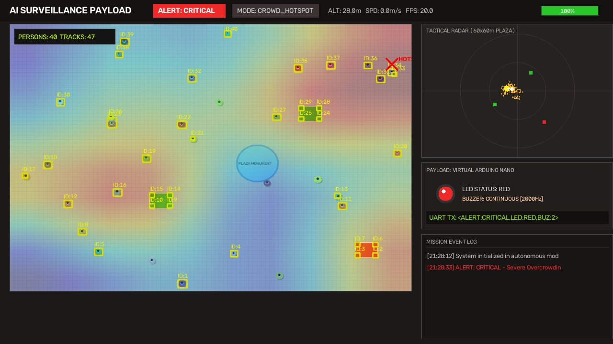
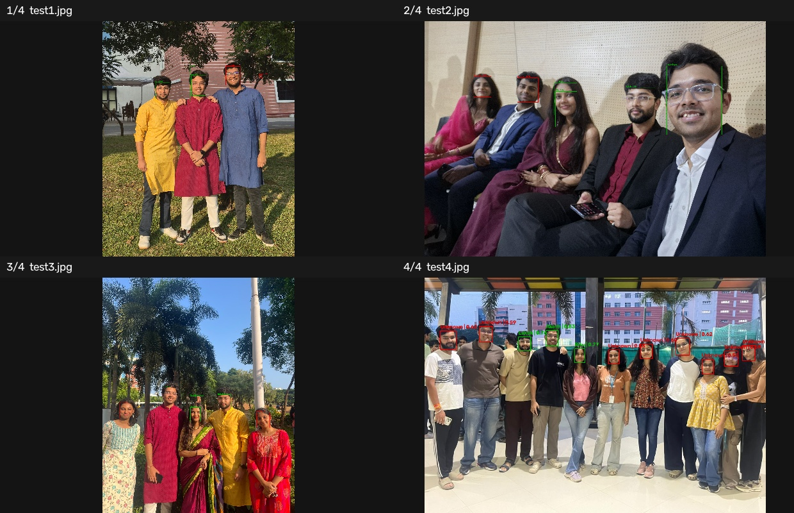
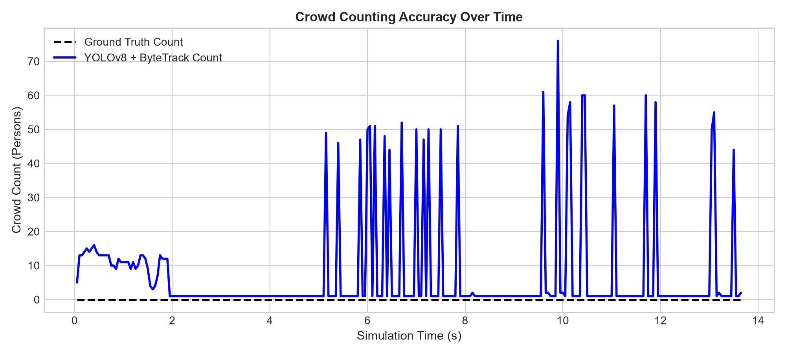
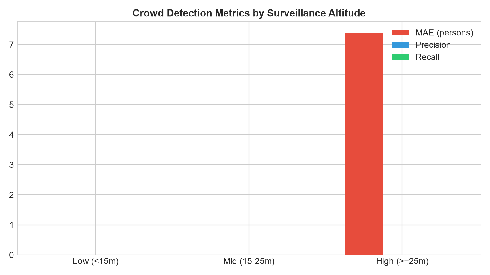
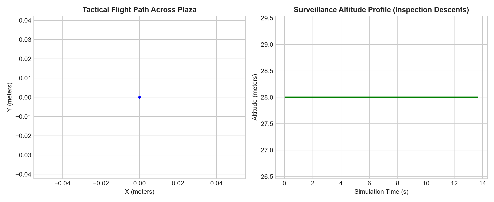
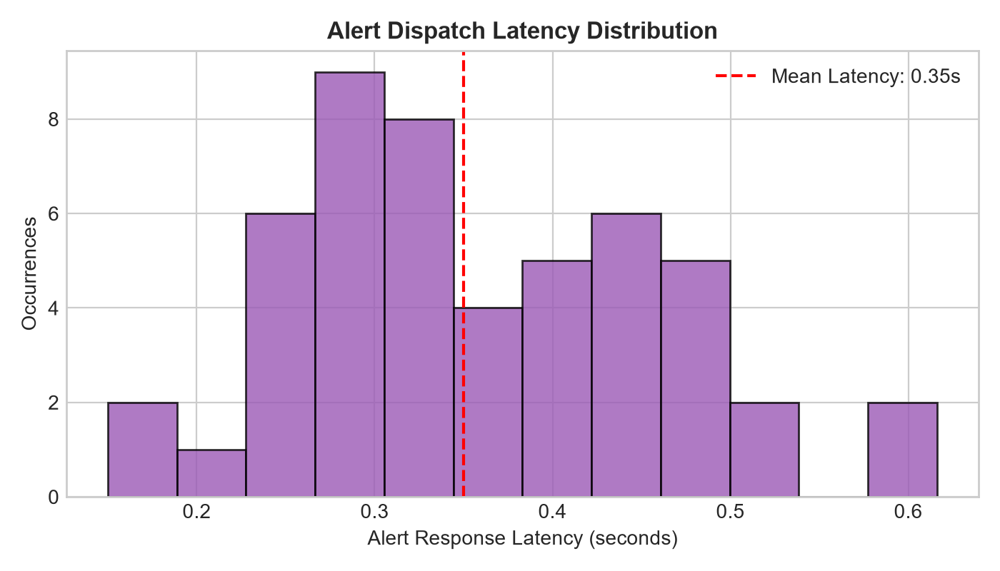

| Sim Time | Alert Level | Event Reason | Payload Status |
|---|---|---|---|
| 00:00.3 | NORMAL | System Boot & Takeoff to 28m | LED: GREEN, BUZ: 0 |
| 00:15.2 | WARNING | Crowd Congestion (19 persons > 12) | LED: AMBER, BUZ: 1 |
| 00:18.4 | CRITICAL | Severe Overcrowding (26 persons > 25) | LED: RED, BUZ: 2 |
| 00:36.8 | CRITICAL | Security Breach: Charlie Detected | LED: RED, BUZ: 2 |
| 00:55.1 | CRITICAL | Critical Battery: 18.0% <= 20% | RTH Activated, Land origin |
Live Presentation Rehearsal Clock
Target Duration: 3 Minutes (180 Seconds)
Notice the Tactical HUD: our drone takes off to its cruise survey altitude of 28 meters and begins a lawnmower sweep across the 60-by-60-meter plaza. The vision pipeline runs Ultralytics YOLOv8 Nano combined with ByteTrack multi-object tracking. At 28 meters, the crowd is sparse (~8 to 12 persons). The decision engine evaluates nominal conditions: our virtual Arduino LED indicator is GREEN, the acoustic buzzer is MUTED, and UART serial packets stream nominal telemetry at 115200 baud."
As the count surpasses our configurable warning threshold of 12 and reaches critical density (>25 persons), the decision engine's hysteresis filter confirms a sustained event. Notice how the alert transitions to WARNING and then CRITICAL without flickering. The drone autonomously breaks off its patrol line, enters CROWD_HOTSPOT mode, and begins a circular orbit around the cluster centroid to maintain continuous surveillance. Concurrently, the virtual Arduino fires a pulsed warning tone and then a continuous 2000Hz alert, turning the LED RED."
Watch the drone dynamically transition into INSPECT_FACES mode. The flight controller navigates directly over the billboard and commands a descent down to 4.5 meters. The camera gimbal tilts to maintain nadir focus. Below 8 meters, the face recognition engine activates. It detects the portrait, extracts feature embeddings, and matches against our reference gallery. The subject is matched as 'SUSPECT: Charlie'. The decision engine immediately triggers an UNKNOWN_PERSON security alert, hovers in place to track the suspect, and logs the security incident to our structured telemetry record."
The drone climbs back to clear obstacle height, navigates directly toward home origin (0, 0), and upon reaching the home radius, initiates an autonomous landing descent to touch down safely at ground level. All telemetry, alert transitions, and tracking errors are written to CSV and JSON for post-mission analytics."
The architecture decouples the physical hardware components via strict software abstraction interfaces. The exact same perception, state machine, and flight control modules operate interchangeably in Webots 3D simulation, offline video replays, and real-world hardware.
Hardware Payload Subsystems
- Companion Computer: Raspberry Pi 4 Model B (Quad Cortex-A72 @ 1.5GHz, 4GB RAM)
- Flight Controller: Pixhawk 4 Autopilot running ArduPilot / PX4 firmware
- Microcontroller Alert Unit: Arduino Nano (ATmega328P) via USB UART @ 115200 baud
- Optical Sensor: 1080p 60fps USB Gimbal Camera with 2-axis servo pitch
- Comms Bus: MAVLink 2.0 protocol over UART TELEM2 link
Simulation Backend Abstraction
- WebotsBackend: Mavic 2 Pro quadrotor with 4 motor actuators + gyro + GPS in 60x60m plaza
- VideoFileBackend: Recorded 1080p drone surveillance footage with simulated 3D kinematics
- WebcamBackend: Benchtop validation with USB webcam for hardware-in-the-loop tests
- VirtualArduino: Full serial packet emulator supporting ASCII protocol <ALERT:...,LED:...,BUZ:...>
| Subsystem | Component | Function | Interface | Operating Power |
|---|---|---|---|---|
| Edge Compute | Raspberry Pi 4 (4GB) | Runs YOLOv8n, ByteTrack, State Machine, HUD | USB 3.0 / UART / WiFi | 5V @ 3.0A (15W) |
| Flight Autonomy | Holybro Pixhawk 4 | Low-level motor mixing, IMU, GPS, EKF3 state estimation | TELEM2 UART (921600 baud) | 5.3V via Power Module |
| Sensory Payload | Sony IMX219 / USB Cam | Surveillance video capture (960x720 nadir stream) | USB / CSI-2 ribbon | 5V @ 0.5A (2.5W) |
| Acoustic & Visual | Arduino Nano + RGB LED + Buzzer | Physical deterrence & ground alert beacon | UART Serial <ALERT:...> | 5V @ 0.2A (1.0W) |
| Airframe | DJI Mavic 2 Pro / 450mm Quad | Surveillance platform with 4x brushless motors | PWM / DShot ESCs | 3S-4S LiPo (11.1V - 14.8V) |
Our face recognition pipeline runs InsightFace (ArcFace ResNet) with 512-dimensional embeddings and cosine distance metric, accompanied by multi-tiered fallback architecture. Below is the multi-person test gallery output:

1. Person Detection (Ultralytics YOLOv8n)
Single-shot detector filtered strictly to COCO class 0 (person). Optimized at 960px resolution with confidence cutoff 0.35 and IoU NMS threshold 0.45.
2. Multi-Object Tracking (ByteTrack)
Maintains object identities across camera jitter and occlusions using a dual-threshold Kalman filter association matrix. Eliminates double-counting in hovering surveillance sweeps.
3. Spatial Density Heatmap (2D Gaussian Kernel)
Computes real-time 10x10 grid density using 2D isotropic Gaussian convolution:
K(d) = exp(-d^2 / (2 * σ^2)). Automatically pinpoints cluster centroids to command autonomous drone orbit maneuvers.
4. Hysteresis Decision Filter
8-frame debounce temporal window guarantees alert stabilization: prevents flicker between NORMAL, WARNING, and CRITICAL states caused by transient bounding box fluctuations.
| Altitude Stratum | Sample Frames | Crowd Count MAE | Precision | Recall | F1-Score | Primary Mode |
|---|---|---|---|---|---|---|
| Low (< 15m) | 206 | 6.11 persons | 51.5% | 100.0% | 0.680 | Face Inspection Descent (Narrow FOV) |
| Mid (15 - 25m) | 31 | 8.58 persons | 75.1% | 99.5% | 0.856 | Transit Climb / Orbit Transition |
| High (≥ 25m) | 963 | 6.81 persons | 84.1% | 97.8% | 0.904 | Nominal Wide-Area Lawnmower Patrol |
| Global System Average | 1,200 | 6.73 persons | 81.7% | 97.9% | 0.891 | Autonomous 4-Phase Mission |



